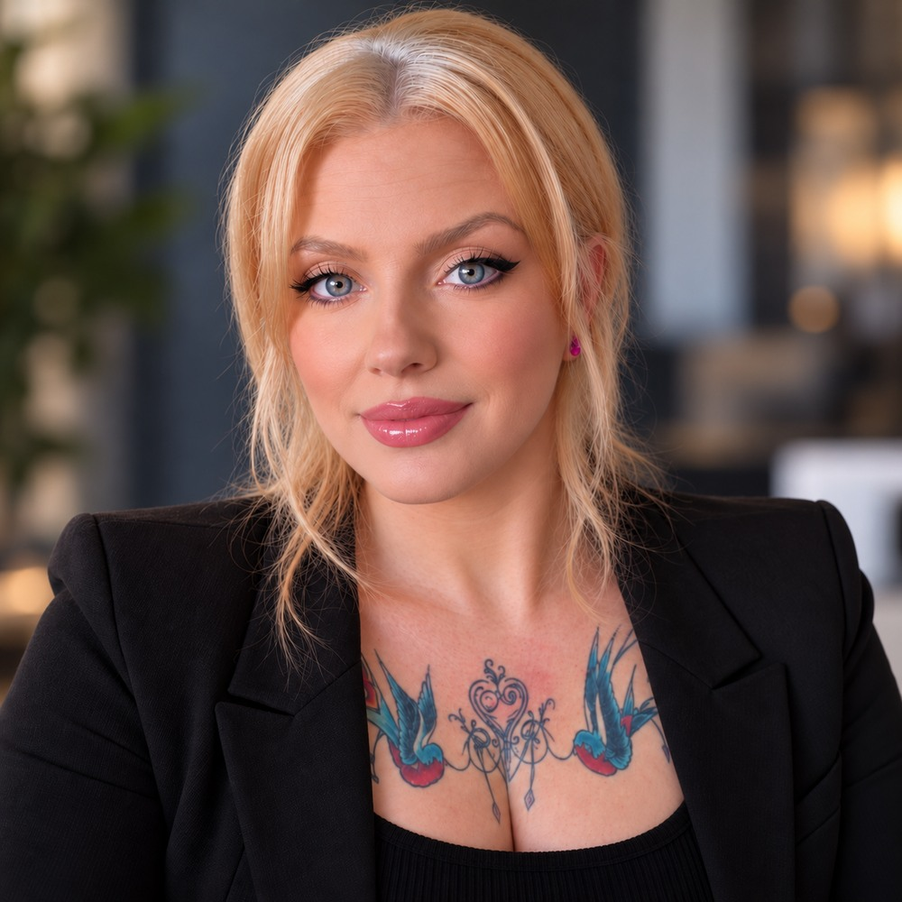
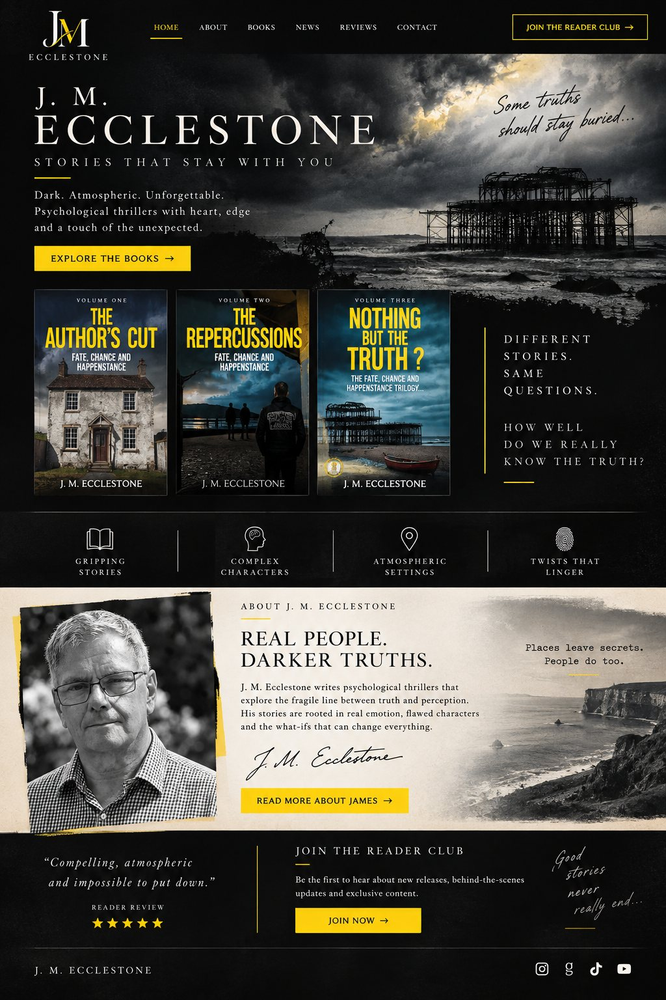
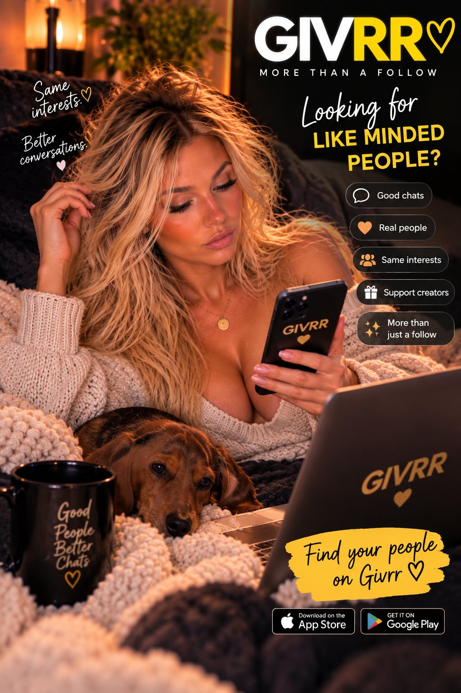

★★★★★
Clients have rated my work 5.0 out of 5 across 19 reviews on PeoplePerHour.
Business problems rarely fit neatly into one category. Neither does the work needed to solve them.
I work with small businesses, entrepreneurs and authors who need more than another list of recommendations.
From commercial research and business strategy to websites, ecommerce, branding, marketing and publishing, I bring the thinking and practical experience to work out what needs doing — and the skills to get it done.
I'm Marnie Danson, and Dorset Division is the business I've built around more than 20 years of working across different industries, roles and commercial challenges.
I've managed ecommerce catalogues with more than 5,000 products, built websites and digital systems, developed brands, worked across major selling platforms, supported publishing projects and helped businesses make sense of problems that don't come with straightforward answers.
That experience has taught me something important: a good idea is only useful if it can work in the real world.
I don't separate the strategy from the practicalities. I want to know what something will cost, how it will operate, what could go wrong and what it will take to make it successful.
And because Dorset Division is independent, there's no account manager between us. When you hire me, I'm the person doing the work.
More about me ↗
A good client relationship isn't built on promises. It's built on doing what you said you'd do, communicating properly and delivering work that makes a difference.
From individual creative projects to ongoing business and digital support, my work has earned a 5.0/5 rating across 19 PeoplePerHour reviews.
I also work with returning clients — something I value because it means the relationship doesn't end the moment a project is delivered.
You don't have to take my word for any of it. The original feedback is there to read.
Clients have rated my work 5.0 out of 5 across 19 reviews on PeoplePerHour.
Returning clients are a significant part of my independent practice.
Read the original client feedback on PeoplePerHour for the full picture.
There isn't one type of project at Dorset Division, because businesses don't all need the same thing.
One client might need a complete online presence. Another needs a complicated ecommerce problem investigated. Someone else needs a brand developed, a publishing project brought together or research that helps them make a commercial decision.
Here's a small selection of the work I've been involved in.

Developing a connected author presence across website, books and digital channels, including website design and development, author branding, content, publishing support and ongoing digital management.

Creating a distinctive landing page for a creator-focused platform, combining visual design, audience messaging and clear routes for creators and fans, alongside creator research and outreach support.
Creative and technical book-cover work, bringing the design into line with the project's publishing requirements.
How we work together
You don't need to arrive with a perfect brief, a finished plan or even a clear understanding of what's causing the problem.
Some projects start with a specific task. Others start with a conversation about what's not working.
My job is to understand the situation, work out the sensible way forward and then put that into practice.
See my approach ↗Tell me what you're trying to achieve, what's getting in the way or what you need someone to take care of. We start with the real situation, not a sales pitch.
I'll look at the requirements, investigate where necessary and recommend a practical approach. You'll know what's involved, what it costs and what we're agreeing to do.
Research, strategy, website development, ecommerce, branding, content, marketing or publishing — whatever the agreed project requires, I get on with delivering it.
The work is reviewed, finalised and handed over clearly. If there are further steps, you'll know what they are and why they matter.
Whether you're starting something new, improving what's already there or dealing with a problem that's been sitting on your list for too long, I'd be interested to hear about it.
No complicated process. No unnecessary sales pitch. Just a straightforward conversation about your business and what I can do to help.